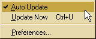
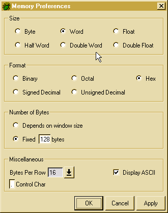

The Memory Window
The Memory Window allows users to display and edit the contents of memory.
The Memory Window Preferences controls all of the display characteristics
of the Memory Window.
Address Menu
Memory Display
Memory Window Preferences
Address Menu

This pulldown menu contains the following three items.
-
Auto Update
-
When selected, causes the Memory Window to update the display every.
If it is not selected, the display will be frozen until it is selected
or "Update Now" is selected.
-
Update Now
-
Forces the Memory Window to update the display immediately.
-
Preferences
-
Opens the Memory Window Preferences dialog.
Memory Display
Like the Register Window, the Memory Window
display is organized into a spreadsheet. The address of any cell in the
Display can be determined by appending the row and column headers for the
cell. Optionally, an ASCII display of the memory appears at the right.
Any non-ASCII-representable byte in memory will appear in the ASCII Display
as a control character (a dot, ".", by default). The Memory
Preferences Dialog may be used to alter the appearance of the Memory
Window.
To navigate the Memory Window, use the mouse
and click the cell of interest. As an alternative, pressing the arrow keys
on the keyboard will focus successive cells, from left to right, top to
bottom. The focus will wrap from left to right, so hitting the right arrow
key will keep advancing the address of the cell selected.
Editing Memory
To edit memory, simply enter the new value of the memory into the cell
and press the enter key on the keyboard. As with the
Register
Window, be careful of the input format used to enter data -- the debugger
is capable of parsing binary, octal, decimal, and hexadecimal values. All
entries will be padded with leading zeroes, if necessary. After you
hit enter, the memory window will automatically shift focus to the next
cell.
To edit part of the value of a cell, you can use the mouse to poistion
the cursor to the exact part of the value you want to change. You
can also use the backspace key to delete part of the value without deleting
the whole value.
Another way to edit memory is to edit the ASCII window. To do
this, select a cell using the mouse. Then type in a new string.
Memory Pop-up Menu
Clicking the right mouse button while the mouse cursor lies within the
bounds of any cell brings up the following menu:

-
Auto Update
-
When selected, the Memory Window will track changes in memory shown in
the Display. When not selected, the Memory Window is "frozen", representing
a "snapshot" of memory.
-
Update Now
-
Forces the Memory Window to update the display immediately.
-
Go To address
-
The Memory Window Display is updated to show memory starting at address
address.
-
Open New Window at address
-
A new Memory Window is opened, displaying memory at address address
-
Preferences...
-
Opens the Memory Window Preferences for editing the appearance of the Memory
Window Display.
Memory Window Preferences
Memory Window Preference Dialog governs the appearance of the Memory Window:
the total number of bytes displayed, the size of each cell, ASCII control
character.

Size of the Display Cells
This attribute controls how many bytes appear in each cell. Valid cell
sizes in the Memory Window may be:
-
Byte
-
Each cell is exactly one byte
-
Half Word
-
Cells are displayed with two bytes
-
Word
-
Each cell contains four bytes
-
Double Word
-
Cells contain eight bytes
-
Float
-
Each cell contains four bytes, displayed as a floating point number
-
Double Float
-
Cells are displayed as floating point, eight bytes each
Format of the Display Cells
The Format option of the Memory Preferences Dialog governs how the debugger
represents the memory. Possible representations include:
-
Binary
-
The values are shown as binary numbers
-
Signed Decimal
-
The values are shown as signed decimal numbers
-
Octal
-
Each cell is represented as an octal number
-
Unsigned Decimal
-
Values are displayed as unsigned decimals
-
Hex
-
Memory is displayed as a hexadecimal number. This is the default.
Size of the Memory Window
The size of the memory window determines how much memory is actually presented
to the user. The total number of bytes shown can either be determined by
the size of the window, in which case resizing the Memory Window will cause
more or less memory to be displayed, or fixed at some specified number
of bytes. By default, the Memory Window shows 128 bytes of memory.
Miscellaneous
Miscellaneous memory preferences include the option to display the ASCII
representation of the memory, including what character to use for non-ASCII
bytes (the "control" character). Additionally, users may specify the number
of bytes per row, either four, eight, sixteen, or thirty-two. The default
is sixteen bytes per row.